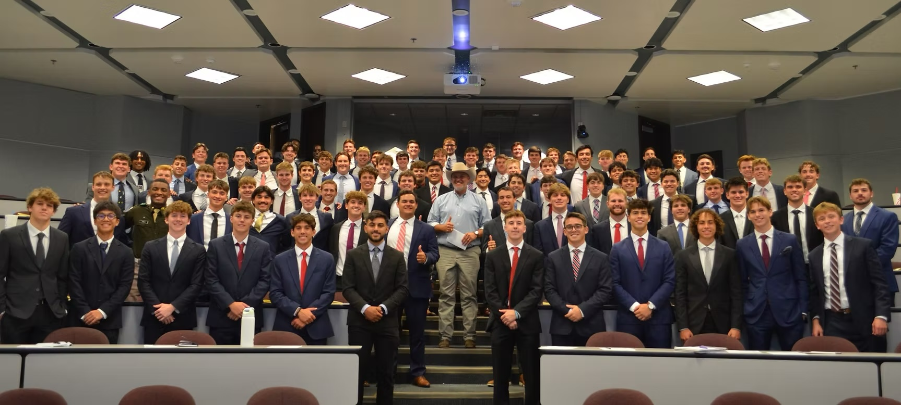

About
One Army and Still Creek Ranch
Gladiator Dash
Gladiator Dash is a 3.1-mile obstacle-integrated mud run and the main philanthropy event of the Texas A&M men's organization, One Army. As Bryan-College Station's original obstacle-integrated mud run, Gladiator Dash is definitely not just another 5K. With challenging obstacles throughout the course, this race will get you muddy and unleash your inner Gladiator.
Race Day includes live music, food trucks, and plenty of fun, so feel free to come early and stay late. 100% of the proceeds from Gladiator Dash benefit Still Creek Ranch, helping One Army continue making a meaningful impact year after year.
Still Creek Ranch
Since 1988, Still Creek has rescued boys and girls from crisis environments including abuse, neglect, abandonment, and sex trafficking, restoring their lives by placing them in a loving, family-style home.
Over the years, One Army has had the privilege of serving Still Creek Ranch in any way possible — from raising over $1.3 million to spending time with the kids and building meaningful relationships with them.
To learn more about the work being done at Still Creek Ranch, visit stillcreekranch.org .

One Army Texas Aggie Men United
One Army is a men's service and leadership organization at Texas A&M University focused on developing its members as young men while giving back to the surrounding community.
The mission of One Army is to develop its members as Aggies and leaders by serving the campus and community while promoting unity throughout Aggieland.
